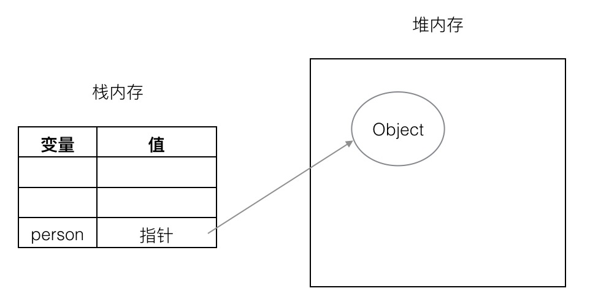
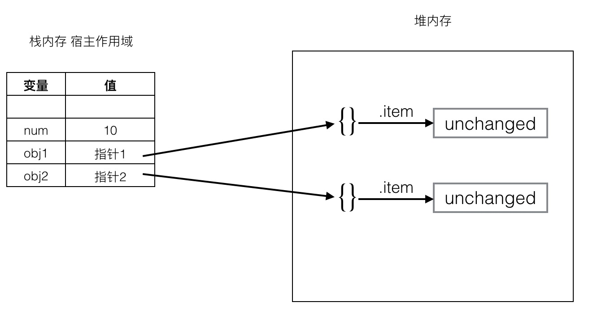
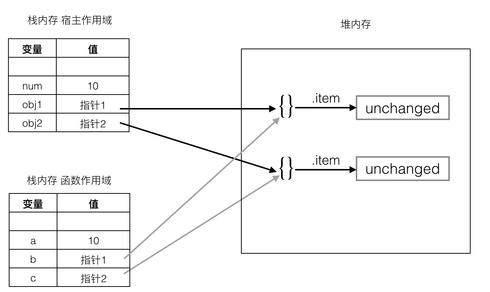
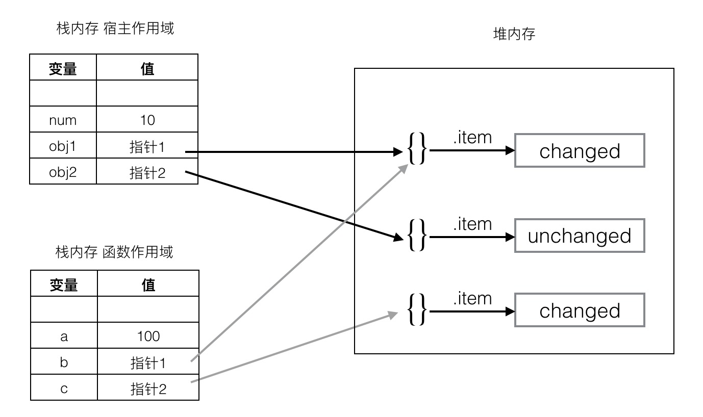

1. 例子 🔗
先来看两个个来自于 《JavaScript 高级程序设计》P70-P71 的两个例子。
1.1. 基本类型参数传递 🔗
function addTen(num) {
num += 10;
return num;
}
var count = 20;
var result = addTen(count);
alert(count); // 20, 没有变化
alert(result); // 30
书上解释说，JavaScript 参数传递都是按值传参。
所以传递给 addTen 函数的值是 20 这个值，所以函数执行结束原始变量 count 并不会改变。
1.2. 引用类型参数传递 🔗
function setName(obj) {
obj.name = 'Nicholas';
obj = new Object();
obj.name = 'Greg';
}
var person = new Object();
setName(person);
alert(person.name); // Nicholas
为什么结果是 Nicholas 呢？

疑问：如果是传值，那应该是把 person 变量的值（也就是一个指向堆内存中对象的指针）传递到函数中，
obj.name = 'Greg';改变了堆内存中对象的属性，为什么person.name还是Nicholas？
2. 传值还是传引用？ 🔗
让我们再将上面两个例子综合为下面的例子：
function changeStuff(a, b, c) {
a = a * 10;
b.item = "changed";
c = {item: "changed"};
}
var num = 10;
var obj1 = {item: "unchanged"};
var obj2 = {item: "unchanged"};
changeStuff(num, obj1, obj2);
console.log(num);
console.log(obj1.item);
console.log(obj2.item);
最终的输出结果是：
10
changed
unchanged
所以 JS 到底是传值调用还是传引用调用呢？要弄清楚这个问题，首先我们要明白到底什么是传值调用（Call-ny-value）和传引用调用（Call-by-reference）。
2.1. 传值调用（Pass by value） 🔗
在传值调用中，传递给函数参数是函数被调用时所传实参的拷贝。在传值调用中实际参数被求值，其值被绑定到函数中对应的变量上（通常是把值复制到新内存区域）。
即 changeStuff 的参数 a b c 是 num1 obj1 obj2 的拷贝。所以无论 a b c 怎么变化，num1 obj1 obj2 都保持不变。
问题就在于 obj1 变了。
2.2. 传引用调用（Pass by reference） 🔗
在传引用调用调用中，传递给函数的是它的实际参数的隐式引用而不是实参的拷贝。通常函数能够修改这些参数（比如赋值），而且改变对于调用者是可见的。
也就是说 changeStuff 函数内的 a b c 都分别与 num obj1 obj2 指向同一块内存，但不是其拷贝。函数内对 a b c 所做的任何修改，都将反映到 num obj1 obj2 上 。
问题就在于 num 和 obj2 没变。
从上面的代码可以看出，JavaScript 中函数参数的传递方式既不是传值，也不是传引用。主要问题出在 JS 的引用类型上面。
JS 引用类型变量的值是一个指针，指向堆内存中的实际对象。
2.3. 传共享调用（Call by sharing） 🔗
还有一种求值策略叫做传共享调用（Call-by-sharing/Call by object/Call by object-sharing）。
传共享调用和传引用调用的不同之处是，该求值策略传递给函数的参数是对象的引用的拷贝，即对象变量指针的拷贝。
也就是说， a b c 三个变量的值是 num obj1 obj2 的指针的拷贝。 a b c 的值分别与 num obj1 obj2 的值指向同一个对象。函数内部可以对 a b c 进行修改可重新赋值。
function changeStuff(a, b, c) {
a = a * 10; // 对 a 赋值，修改 a 的指向，新的值是 a * 10
b.item = "changed"; // 因为 b 与 obj1 指向同一个对象，所以这里会修改原始对象 obj1.item 的内容
c = {item: "changed"}; // 对 c 重新赋值，修改 c 的指向，其指向的对象内容是 {item: "changed"}
}
3 代码分析 🔗
接下来让我们再来分析一下代码。
3.1 变量初始化 🔗
var num = 10;
var obj1 = {item: "unchanged"};
var obj2 = {item: "unchanged"};

3.2 调用函数 🔗
changeStuff(num, obj1, obj2);

可以看到，变量 a 的值就是 num 值的拷贝，变量 b c 分别是 obj1 obj2 的指针的拷贝。
函数的参数其实就是函数作用域内部的变量，函数执行完之后就会销毁。
3.3 执行函数体 🔗
a = a * 10;
b.item = "changed";
c = {item: "changed"};

如图所示，变量 a 的值的改变，并不会影响变量 num。
而 b 因为和 obj1 是指向同一个对象，所以使用 b.item = "changed"; 修改对象的值，会造成 obj1 的值也随之改变。
由于是对 c 重新赋值了，所以修改 c 的对象的值，并不会影响到 obj2。
4. 结论 🔗
从上面的例子可以看出，对于 JS 来说：
- 基本类型是传值调用
- 引用类型传共享调用
传值调用本质上传递的是变量的值的拷贝。
传共享调用本质上是传递对象的指针的拷贝，其指针也是变量的值。所以传共享调用也可以说是传值调用。
所以《JavaScript 高级程序设计》说 JavaScript 参数传递都是按值传参 也是有道理的。
参考